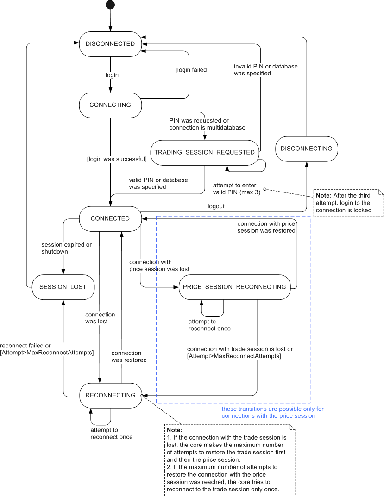

Session Statuses
Brief
The article describes session statuses.
Details
The description of session statuses is provided below.

Session Status |
Session Status Description |
|
The session is disconnected from the server. From this status, the session is transferred to the |
|
The user specified login information and the session is being connected to the server. From this status, the session can be transferred to one of the following statuses:
|
|
The login was successful, the session is connected successfully. For connections with multiple trading sessions or requiring a PIN code, a valid PIN or database was specified, the session is connected successfully. This is the only status when most of the methods of the session object can be used. From this status, the session can be transferred to one of the following statuses:
|
|
The user logged out, the current session is being disconnected. From this status, the session is transferred to the |
|
For connections without the price session: The connection was lost. The core is attempting to restore the connection. For connections with the price session: The connection with the price session was lost and either: 1. The connection with the trade session exists but the maximum number of attempts to reconnect to the price session
was reached (currently 20) The core is attempting to restore the connection with the trade session. From this status, the session can be transferred to one of the following statuses:
For connections with the price session:
|
|
This status is possible only on connections having more than one trading session or requiring a PIN code. After the user entered the login information, the server requests the trading session or a PIN code. The login process is suspended until a subsession or a PIN is specified. From this status, the session can be transferred to one of the following statuses:
|
|
This status is possible only on connections with the price session. From this status, the session can be transferred to one of the following statuses:
|
|
The session was lost. The session is transferred to this status in one of the following cases:
From this status, the session is transferred to the |